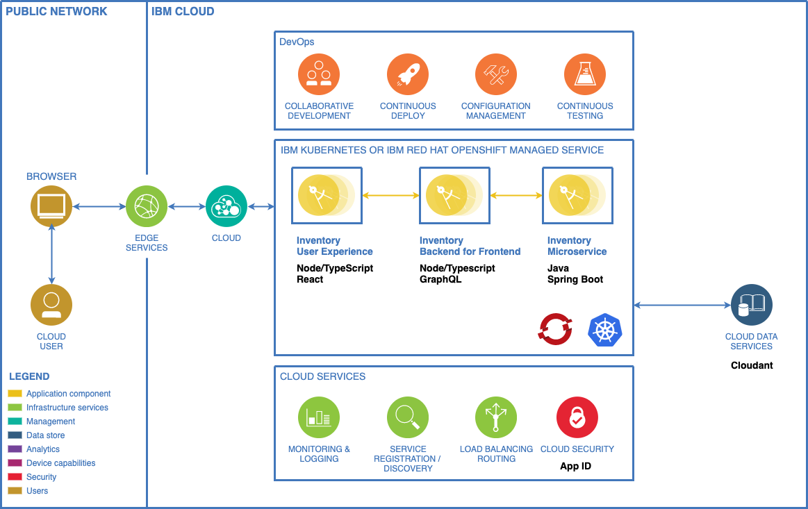

Fast Track Guide: Inventory Application
Develop an example application with a three-tier microservices architecture and deploy it into Red Hat OpenShift on premises, on AWS, Azure or IBM Cloud. This OpenShift development environment has been pre-configured with a sample SDLC (Software Delivery Life Cycle).
Business Need
In this guide, imagine you have completed an Enterprise Design Thinking Workshop and the result is an MVP statement that defines the desired business outcomes. Use the steps below to help deliver this MVP quickly while following Garage Method best practices.
MVP Statement
An MVP is a first hill. Here's the hill statement for the MVP we're going to build:
-
Who: Distribution employees in each of the regional warehouses
-
What: A secure web application that enables easy access to list of product SKU inventory levels and inventory locations
-
Wow: Make the system appealing and easy to use. Develop it quickly as a minimum viable product. Use the latest managed container runtimes and DevOps best practices to enable post MVP feature improvements. Simulate a release to a Test environment.
Architecture
We will build an application that is made up of microservices in three-tier architecture. Each tier encapsulates a clean separation of concerns. Each app microservice component will be modelled using microservices and use a number of polyglot programming languages and frameworks. Data will be stored in a NoSQL Database.

User interface
The user experience for the application has been designed by the design team and this drives the requirements for the development team.
Technical Requirements
The Micro services should adhere to the following technical requirements:
- Microservices
- Stateless
- REST APIs
- Polyglot
- DevOps with CI/CD (continuous integration and continuous delivery)
- Use in cluster CI technology to be efficient and secure
- Use latest GitOps best practices
- Monitoring and logging
- Code analysis
- App security
- Deployed to Red Hat OpenShift cluster which is based on Kubernetes open source technology
- Follow the Carbon Design System user experience
Understanding Pipelines as Code
Before diving into the deployment, let's understand the key concepts of Pipelines as Code:
What is Pipelines as Code?
Pipelines as Code is a Kubernetes-native CI/CD framework that allows you to define and run Tekton pipelines directly from your Git repository. Instead of configuring pipelines through a UI or separate configuration system, you store your pipeline definitions in a .tekton/ directory alongside your source code.
Key Concepts
- Repository CR: A Custom Resource that tells Pipelines as Code which Git repository to watch and where to run pipelines
- Pipeline Definitions: YAML files in
.tekton/directory that define your CI/CD workflows - Event Matching: Annotations in your pipeline definitions that specify when pipelines should run (e.g., on pull requests, pushes)
- Automatic Resolution: Pipelines as Code automatically fetches tasks from Tekton Hub, remote URLs, or local files
- Git-native: Your pipelines are versioned with your code, making them easy to review and update
How It Works
- You create a
RepositoryCR in your OpenShift namespace - You define pipeline runs in
.tekton/*.yamlfiles in your Git repository - When a Git event occurs (push, pull request), Pipelines as Code:
- Matches the event to your pipeline definitions using annotations
- Resolves all referenced tasks and resources
- Creates a
PipelineRunCR in your namespace - Tekton executes the pipeline
Prerequisites
Before starting, ensure you have:
tkn- Tekton CLItkn pac- Pipelines as Code CLI pluginoc- OpenShift CLI (available from your OpenShift console Help menu)- Access to an OpenShift cluster with Pipelines as Code installed
- A GitHub account and organization (if running as part of a workshop)
Fast Track Guide
Step 1: Deploy Inventory Service
The inventory service is a Java Spring Boot application that provides the backend API for managing inventory items.
1.1 Create Repository from Template
Create a new repository from the Inventory Service Solution template. Make the cloned repository public.
Naming Convention
To prevent naming collisions in workshop environments, choose the GitHub organization you've been invited to as Owner and name the repository inv-svc-${UNIQUE_SUFFIX}, replacing ${UNIQUE_SUFFIX} with your team name or initials.
1.2 Login to OpenShift
In the OpenShift web console, click on your user ID (top right), then Copy login command to get your login token.

Click Display Token, copy the login command, and run it in your terminal:
1.3 Create Project and Configure Secrets
Create a new project for your inventory application:
export UNIQUE_SUFFIX=ns # CHANGEME: Use your team name or initials
oc new-project inventory-${UNIQUE_SUFFIX}-dev
Create the required secrets for container registry access:
cat <<EOF | oc apply -f -
---
kind: Secret
apiVersion: v1
metadata:
name: registry-config
namespace: inventory-${UNIQUE_SUFFIX}-dev
stringData:
config.json: '{"auths":...}' # CHANGEME: Your registry credentials
type: Opaque
---
kind: Secret
apiVersion: v1
metadata:
name: ci-config
namespace: inventory-${UNIQUE_SUFFIX}-dev
stringData:
img-namespace: library # CHANGEME: Your registry namespace
img-server: core.harbor.example.com # CHANGEME: Your registry server
type: Opaque
EOF
Workshop Participants
If you're doing this lab as part of a workshop, secrets have been pre-created in the ci-tools namespace. Simply copy them:
Create a default pull secret for container images:
oc get secret registry-config -o yaml | yq '.data."config.json"' | base64 -d > /tmp/registry-config.json
oc create secret docker-registry registry-dockerconfigjson --from-file=/tmp/registry-config.json
oc secrets link default registry-dockerconfigjson --for=pull
1.4 Clone and Setup Pipeline
Clone your repository locally:
git clone https://github.com/cloud-design-patterns-journey/inv-svc-${UNIQUE_SUFFIX}.git
cd inv-svc-${UNIQUE_SUFFIX}
Grant the pipeline service account privileged access and create the Pipelines as Code repository:
Understanding These Commands
oc adm policy add-scc-to-user privileged -z pipeline: Grants the pipeline service account permission to run privileged containers (needed for building container images)tkn pac create repository: Interactive command that creates aRepositoryCR linking your Git repository to Pipelines as Code
Prerequisites
tkn pac create repositoryassumes Pipelines as Code is already configured on your cluster with your Git provider- If running this lab as part of a workshop, this has been configured for you
- Make sure you use the provided GitHub organization when creating your repository from the template
1.5 Configure Repository Parameters
In the OpenShift console, navigate to Pipelines → Repositories and edit the newly created Repository YAML to add cluster-specific configuration:
...
spec:
params:
- name: img-server
secret_ref:
name: ci-config
key: img-server
- name: img-namespace
secret_ref:
name: ci-config
key: img-namespace
...
What This Does
These parameters tell your pipeline where to push the built container images. The values are pulled from the ci-config secret you created earlier, keeping sensitive information secure.
1.6 Trigger the Pipeline
Kickoff the pipeline by making a commit:
Pipeline Execution
The CI pipeline will automatically start thanks to a webhook configured via GitHub Apps. You can monitor progress in the OpenShift console under Pipelines → PipelineRuns.
Once complete, test the deployed service by accessing its route:
Step 2: Deploy Backend for Frontend (BFF)
The BFF is a Node.js/TypeScript application using NestJS that provides a GraphQL API layer between the frontend and backend services.
2.1 Create Repository from Template
Create a new repository from the BFF Solution template.
Naming Convention
Choose the GitHub organization you've been invited to as Owner and name the repository inv-bff-${UNIQUE_SUFFIX}.
2.2 Setup in Existing Project
Switch to your existing project:
export UNIQUE_SUFFIX=ns # CHANGEME: Use the same value as before
oc project inventory-${UNIQUE_SUFFIX}-dev
Clone the repository:
git clone https://github.com/cloud-design-patterns-journey/inv-bff-${UNIQUE_SUFFIX}.git
cd inv-bff-${UNIQUE_SUFFIX}
2.3 Create Pipeline Repository
Create the Tekton pipeline for the BFF service:
2.4 Configure Repository Parameters
In OpenShift console (Pipelines → Repositories), edit the newly created Repository YAML:
...
spec:
params:
- name: img-server
secret_ref:
name: ci-config
key: img-server
- name: img-namespace
secret_ref:
name: ci-config
key: img-namespace
...
2.5 Configure Service Connection
Create a secret with the backend service URL:
oc create secret generic inv-bff-${UNIQUE_SUFFIX}-config \
--from-literal=SERVICE_URL=http://inv-svc-${UNIQUE_SUFFIX}:8080
Update the Tekton deploy task in .tekton/tasks.yaml to inject environment variables:
...
echo "Creating deployment $(params.app-name)"
kubectl create deploy $(params.app-name) --image $(params.image) --port $(params.app-port)
kubectl set env --from=secret/$(params.app-name)-config deployment/$(params.app-name) # ADD THIS LINE
kubectl expose deploy $(params.app-name) --port $(params.app-port)
oc expose svc $(params.app-name)
...
Why This Matters
This configuration tells the BFF service where to find the inventory service. By using a secret, we keep configuration separate from code and can easily update it without rebuilding the application.
2.6 Commit and Deploy
Commit and push your changes:
The CI pipeline will start automatically. Once complete, test the BFF service:
Step 3: Deploy Frontend Microservice
The frontend is a React application using Carbon Design System that provides the user interface for the inventory application.
3.1 Create Repository from Template
Create a new repository from the UI Solution template.
Naming Convention
Choose the GitHub organization you've been invited to as Owner and name the repository inv-ui-${UNIQUE_SUFFIX}.
3.2 Setup in Existing Project
Switch to your project:
export UNIQUE_SUFFIX=ns # CHANGEME: Use the same value as before
oc project inventory-${UNIQUE_SUFFIX}-dev
Clone the repository:
git clone https://github.com/cloud-design-patterns-journey/inv-ui-${UNIQUE_SUFFIX}.git
cd inv-ui-${UNIQUE_SUFFIX}
3.3 Create Pipeline Repository
Create the Tekton pipeline:
3.4 Configure Repository Parameters
In OpenShift console (Pipelines → Repositories), edit the Repository YAML:
...
spec:
params:
- name: img-server
secret_ref:
name: ci-config
key: img-server
- name: img-namespace
secret_ref:
name: ci-config
key: img-namespace
...
3.5 Configure BFF Connection
Create a secret with the BFF service URL:
oc create secret generic inv-ui-${UNIQUE_SUFFIX}-config \
--from-literal=API_HOST=http://inv-bff-${UNIQUE_SUFFIX}:3000
Update the Tekton deploy task in .tekton/tasks.yaml:
...
echo "Creating deployment $(params.app-name)"
kubectl create deploy $(params.app-name) --image $(params.image) --port $(params.app-port)
kubectl set env --from=secret/$(params.app-name)-config deployment/$(params.app-name) # ADD THIS LINE
kubectl expose deploy $(params.app-name) --port $(params.app-port)
oc expose svc $(params.app-name)
...
3.6 Commit and Deploy
Commit and push your changes:
The CI pipeline will start automatically. Once complete, access your application:
Understanding Your Pipeline
Your .tekton/ directory contains pipeline definitions that run automatically on Git events. Here's what happens:
Pipeline Triggers
Your pipeline runs are triggered by annotations in the .tekton/*.yaml files:
annotations:
pipelinesascode.tekton.dev/on-event: "[push, pull_request]"
pipelinesascode.tekton.dev/on-target-branch: "[main]"
Pipeline Stages
A typical pipeline includes:
- Fetch: Clone the Git repository
- Build: Compile and package the application
- Test: Run unit and integration tests
- Image Build: Create a container image
- Push: Push the image to the registry
- Deploy: Deploy to OpenShift
Monitoring Pipelines
Monitor your pipelines in the OpenShift console:
- Pipelines → PipelineRuns: View all pipeline executions
- Pipelines → Repositories: Manage repository configurations
- Click on a PipelineRun to see detailed logs and status
You can also use the CLI:
# List pipeline runs
tkn pipelinerun list
# View logs
tkn pipelinerun logs <pipelinerun-name> -f
# List repositories
tkn pac repository list
Troubleshooting
Pipeline Fails to Start
- Verify the
RepositoryCR is created:oc get repository - Check webhook configuration in your Git provider
- Ensure the GitHub App has access to your repository
Image Push Fails
- Verify registry credentials in
registry-configsecret - Check
ci-configsecret has correct registry server and namespace - Ensure the pipeline service account has pull/push permissions
Deployment Fails
- Check if secrets are created:
oc get secrets - Verify service URLs in configuration secrets
- Review deployment logs:
oc logs deployment/<app-name>
Getting Help
Use these commands to investigate issues:
# View pipeline run details
tkn pipelinerun describe <pipelinerun-name>
# Check pod logs
oc logs <pod-name>
# View events
oc get events --sort-by='.lastTimestamp'
# Check repository status
tkn pac repository describe <repository-name>
Summary
Congratulations! You have successfully:
- ✅ Deployed a three-tier microservices application
- ✅ Configured Pipelines as Code for GitOps-style CI/CD
- ✅ Set up automatic pipeline triggers on Git events
- ✅ Implemented secure configuration management with secrets
- ✅ Created a complete development workflow on OpenShift
Your application is now running with a fully automated CI/CD pipeline that triggers on every code change!